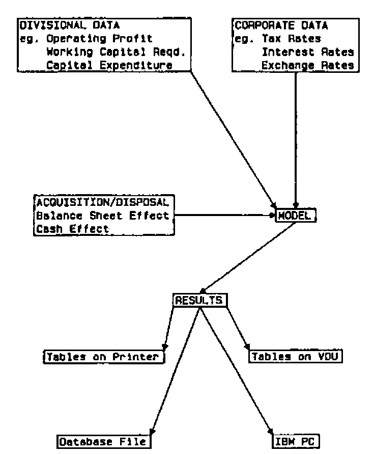

Financial Planning at Imperial
Vector 2:4, page 93
Transcribed from the printed issue; not yet reviewed. Read it in the PDF of the issue, page 93
Introduction¶
Imperial as a group has been using computers for financial modelling for at least 15 years, under various guises. For the last 4 years the APL language has been very successfully used at the centre, at first on a single-user 8-bit micro, and more recently on a multi-user 16-bit Supermicro. This paper gives a non-technical review of the history of the development, together with an overview of the current state of the model.
The Historical Perspective¶
Prior to 1981, Imperial as a group had had considerable success with financial modelling using the various versions of Prosper on ICL mainframes. However this had always been at a level in the organisation well below the consolidated Group accounts.
Around 1980 the Operations Research section became convinced that APL was the preferred modelling language (supplanting Fortran) for ad-hoc projects. The advent of APL on a cheap, portable 8-bit micro encouraged us to review our options for financial modelling. In March 1981 an internal report was produced, comparing VDU Prosper, FCS (on two bureaux), EIS (on Boeing Computer Services) and TIS-APL on a Superbrain. Several typical financial modelling benchmarks were produced using each of these languages. We wrote the Prosper and APL models and the bureaux provided their versions. Our conclusions were that we would continue to use VDU Prosper where this was appropriate (e.g. end-user running the model), but TIS-APL would be used on models where the O.R. section was the user.
Late in 1981, with the advent of a new Chairman, came our chance to demonstrate the use of financial modelling at the Group level, and our choice naturally fell on the Superbrain, as the London end of Group Head Office had no computing facilities. The demonstration went well and we were commissioned to work with the Chief Accountant’s Department to produce a 1-year, or Budget, model at the Group consolidated accounts level. This was initially squeezed onto the Superbrain and was very well received. The ability to do more than the 1 or 2 “what-ifs” the manual calculations allowed, opened up a whole new world of possibilities.
The purchase of two multi-user MicroAPL Spectrums for Head Office in July 1982, one for the Chief Executive’s Information System (q.v. VECTOR Vol 1, No 2) and the other for the Chief Accountant’s Department to do the routine consolidation of the monthly accounts, meant that APL.68000 was now available. The Budget model was very easily transported over and work began almost immediately on a 3-year model.
This meant an order of magnitude change in the complexity, mainly connected with time lags inherent in the calculation and payment of Corporation tax. In January 1983, the model was expanded again to a 5-year one, a much less traumatic change. The complexity was increased however, in April 1983, by the desire to input U.S. data in dollars and have the model deal with the U.S. tax regime, borrowing in the U.S., and exchange rate conversion.
The model had become by then an integral part of the Strategic Planning process, and was at times in use 12 hours a day, and at weekends. The ability to investigate the numerous strategic options being considered, without being constrained by the time it takes to “turn the handle” was exploited to the full.
Since mid-83 the pace of development has slowed considerably, though not the usage. Further enhancements included the ability to acquire and/or dispose of companies. It was extensively used to explore the possibilities available before deciding to dispose of most of the Howard Johnson Company in 1984, and before deciding to approach United Biscuits with a view to a merger late in 1985.
The latest change to the model has effectively removed the limit on the number of years in the planning horizon.
Important Characteristics¶
1. Evolutionary Development¶
The development was always undertaken in close contact with the accountants, in fact most of the important code was written whilst actually sitting at the terminal with the accountant responsible for the model. In this way the modularity available to a writer in APL was used to the full. Functions were often tested in isolation with all possible (and impossible?) combinations of input. This was especially important when trying to model the U.K. tax structure. The ability, in APL, to stop the function wherever necessary, investigate variables, and then re-start was also well used. This was most fruitful in areas where mis-understandings arose over the interpretation of the words used to specify a section of logic.
2. User Driven¶
The method used to develop the model led naturally to the accountant involved taking over the running of system. He was totally familiar with what was was going on, and indeed the words used in the dialogue are mainly his. Once it was accepted as working, 3 other accountants (including the Chief Accountant and his deputy) started to use it with no obvious difficulty. One of the reasons for the success of the model is that it is now “owned” by that department.
3. Top-Level Model¶
As mentioned above, the aim of the program is to model the Group consolidation process. It works in a bottom-up fashion, data being input at the Divisional level. A diagrammatic representation of the model structure is shown in figure 1.
In terms of the complexity of the calculations, it is very definitely at the detailed, as opposed to the “broad-brush”, end of the spectrum. Some parts of the model allow for two modes of input, (e.g. depreciation) either “accurate” calculations that are carried out off-line and the results fed in, or additional data given to a sub-model that produces a good approximation. The trade-off between the volume of input data required to achieve an end result and the ease with which it can be derived from other sources is an important consideration.
4. Calculations undertaken¶
As mentioned above, the UK & US tax structures are modelled to a high degree of accuracy. Another important feature is the treatment of interest on short term borrowings, this is calculated correctly with a simultaneous equation to allow for “interest on interest”. We heard recently that a reputable merchant bank did not bother with this in their “corporate model”. Lease rental payments (capital & interest) are also calculated, at the given interest rates, for new leases input in the planning period.
5. File Structures¶
Only input data are stored, in the overlay form available in APL.68000, one component of the file for each different scenario. There is also an administrative component, holding the text used to describe each run, the date & time of creation, as well as the name of the creator. In the early days, frequent major changes to the structure meant that no file became too large (100 runs was typical). However, recently this has become a problem, both in terms of an enormous list of model names being presented whenever the “read-file” option was chosen, and, more seriously, the limit on physical storage on the hard disk was reached (6.5 megabytes for a logical disk surface).
The latest change has been to create a meta-file structure (i.e. file of files). This allows much more flexibility, both in terms of the physical location of the files, and also in terms of the actual usage of the model (eg. one file would be for all the runs connected with the proposed United Biscuits merger, another with the 85/86 Budget).
6. Security¶
The data in the various runs (even the titles!) are obviously very sensitive. There is the usual multi-level passworded access to the model. There is, however, an additional level, whereby the creator of an input file has to specify who can access (read only or read/overwrite or not at all) that file. Thus the user, when choosing his input file, only has available those files he is allowed to know about.
7. Full-screen data input¶
From our VDU-Prosper days we were convinced of the utility of this approach, and were amazed, back in 1981 when we conducted our survey of financial planning languages, that the developers of these languages were not taking any interest in this facility that was available now that the VDU had superceded the teletype to become the preferred input device. One of the big plus-points in TIS-APL’s favour was that we could design our own data input screens.
The functions currently available on our data input screens include:
- the execution of a specified function at the press of a key (mainly used to re-calculate sub-totals, although it could be used for validation).
- a printer dump of the screen as displayed.
8. Data Input Comparison¶
There have always been a large number of input variables (118 at present). It became apparent, even in the early days of the model, that a facility to print-off a report of the differences between two files would be exceedingly useful. It started life as a “special”, but is now one of the options on the main menu. It produces an exception report (i.e. only those tables where there is a difference), using the same format as that used to input the data on the screen.
9. Output of Model Results¶
One of the first utility workspaces we developed was an extremely flexible report-generator. This is used to produce the output. The individual tables are only produced if requested. Some tables are intended for direct inclusion in reports, and are in the same format as that used internally for all financial reporting (e.g. monthly accounts), whilst others are much more detailed ‘working papers’ that allow the accountants to reconcile the results of several runs.
The following options are available at the output stage (figure 2 is a copy of the main menu presented at this stage) :
- view any table on the VDU screen.
- redirect any table to the printer (high-speed matrix or quality daisy-wheel).
- store a subset of the results into a special database file (see later).
- send most tables to an IBM PC (for ‘Importing’ into Lotus 1-2-3 for further analyses – see later)
Current Statistics¶
- There are currently available some 490 different runs of the model, 174 in the latest version of the model.
- Each run of the model requires about 35k of storage.
- There are 118 input variables, ranging from scalars to three-dimensional arrays.
- The data are entered using 49 different input screens.
- The model takes about 1 minute to calculate the 5 years of a plan, in an empty machine. It is a multi-user system, so it is often longer than this. It will run in a 500k workspace.
- There are 25 different result tables available. A print of the whole set runs to 36 pages.
Links to other systems¶
1. Database Link¶
We make considerable use of our own relational database language (Mistral) in the work connected with the Chief Executive’s Information System. The idea of using the many facilities available for re-formatting results, producing graphs, and displaying comparisons between the results of different runs of the model seemed very attractive. The output format is by its nature less easy to specify as a fixed format such that it will cope with all the various reasons for a particular run of the model.
In practice, re-formatting has been undertaken using a word-processor (at the moment it all has to be re-typed, an electronic link has been tested but has not been considered worth the effort required to make it work). The database was used in the early days for producing the graphs, but this is no longer the case due to two main reasons. Firstly, the volume of data necessary to draw a graph is usually very small. The time taken to exit from the 5-year planning model, load the database and specify the graph format was too long when compared with typing in a few numbers into our general graph drawing package.
Secondly, the required layout of each graph was always unique, and usually differed in important ways from the default settings easily available in the graphics part of the database. However, considerable use has been made of the facilities for certain specific exercises. For example, in order to understand the implied synergy in an acquisition, runs can be made of Imperial on its own, Company X on its own, and then Imperial plus Company X. The database then easily allows the user to table the “synergy” in the Balance Sheet, Profit & Loss or even the tax payments. Manually this would not only be very time consuming, but also error prone.
2. PC Link¶
All of the main reports can be sent to a PC. The PC is connected to the Spectrum as another peripheral (a printer!) and the Spectrum completely controls the transactions. The PC has to be configured to receive the data, which we do using a package called “Crosstalk”. On defining which tables are to be sent, the Spectrum mimics the typing of PC-DOS commands at the keyboard, and a file is created on the PC for each output table requested. The format of the file is such that it can be imported into Lotus 1-2-3 (i.e. a PRN file). The complete table, including page and column headings as well as row titles is reproduced. This facility has not been heavily used as yet, and we are considering several alternatives to make the process simpler and quicker, including having the PC as the Spectrum terminal with Crosstalk (it is also a terminal emulator) running concurrently with 1-2-3.
Conclusion¶
The model has become an essential part of Imperial’s strategic planning process. The power available from a computerised financial model cannot be undersold. As to the decision to write the model in APL as opposed to one of the specialist financial planning languages, we have no regrets at all. It is true to say that we have not been held back by the computer/language from providing the user with any facility he required, and I am sure that would not have been true if we had not decided on APL. If we were making the decision today, I know that the competition is a lot closer, but I would be very interested to hear if any of them can provide exactly what our users have available today.
Acknowledgements: The author wishes to thank Ian Henson and Peter Carrington for providing the substance, around which the model has been built. The views expressed in this paper are those of the author and are not necessarily shared by Imperial Group.

Figure 2. Main Output Options
| 1. | Divisional Operating Profit | |
| 2. | Group Profit before Tax | |
| 3. | Group Consolidated Profits | |
| 4. | Group Balance Sheets (Assets) | |
| 5. | Group Balance Sheets (Financed by) | |
| 6. | Group Cash Flow | |
| 7. | Extraordinary Items | |
| 8. | Group Funds Statement | |
| 9. | Interest Charges Analysis | |
| Print: | 10. | Hard Copy of the Main Results |
| Menu: | 11. | Output (Detailed) Options |
| Database: | 12. | Set up a File |
| IBM PC: | 13. | Transfer Output to an IBM PC |
| Return: | 14. | Main Option Menu |